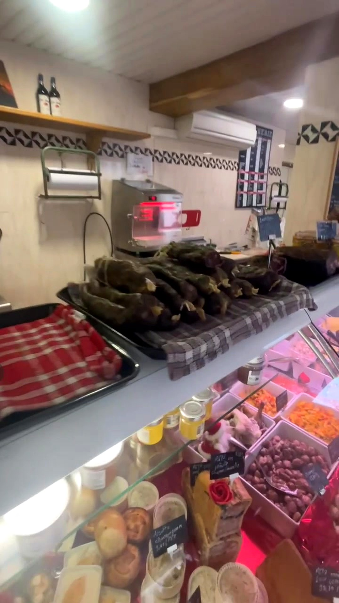
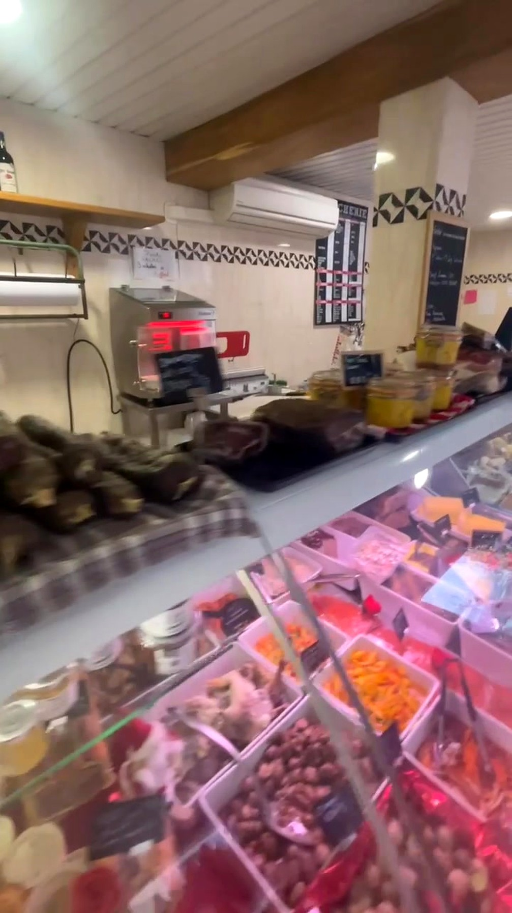

« Une boucherie comme on les aime : produits de qualité, viande toujours fraîche et de précieux conseils pour bien choisir sa pièce. »


Chapitre 01
Notre histoire
La Boucherie Ulysse & Sandrine est née de la passion de deux artisans pour le métier de boucher-charcutier. Chaque jour, nous sélectionnons nos viandes auprès de producteurs locaux et préparons sur place notre charcuterie : pâtés, terrines, saucissons et jambons faits maison, dans la plus pure tradition du Couserans.
« Le même accueil chaleureux, le même savoir-faire artisanal, chaque jour. »
Que vous veniez pour le repas du dimanche, une commande de fête ou simplement un conseil sur la cuisson d'une pièce, vous retrouverez toujours la même attention portée à chaque produit qui sort de notre laboratoire.
- 01Viandes locales sélectionnées avec soin
- 02Charcuterie & plats préparés faits maison
- 03Conseils personnalisés de nos artisans bouchers
- 04Accueil familial et chaleureux